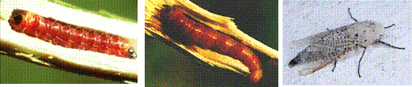

| Home |
| PEST OF COFFEE |
mAJOR PESTES |
| 1. White stem borer |
| 2. Red borer |
| 3. Shot hole borer |
| 4. Berry borer |
| 5. Green scale |
mINOR PESTES |
| 1. Mealy bug |
| Questions |
| Download Notes |
COFFEE :: MAJOR :: RED BORER
2. Red borer: Zeuzera coffeae (Cossidae: Lepidoptera)
Distribution and status: Widespread in cofee producing areas
Host range: Tea, cinnamon, sandal, cotton, orange, teak and many forest trees.
Damage symptoms
Larva causes damage in Arabica and Robusta coffee by boring into young stem, primary and secondary branches to feed on the wood. In early stages of attack, young plants or branches show signs of wilting. Infested part bears one or two holes through which, pellet-like excrement of the larva hangs out and accumulate at the base of the plant. In advanced cases, the branch or the whole plant dries up.
Bionomics
Eggs are laid in strings on the barks. Egg period is 8 to 12 days. Red larva enters through the junction of leaf stalk and twig, constructs a tunnel that extends even up to the roots. Larval and pupal stage together last for about 12 to 24 months. After moth emergence, pupal skin protrudes outside through exit hole. Adult is a medium sized moth with spotted wings.
|  |
Management
- Cut and burn red borer infested plant or twigs
- Encourage the activity of braconid parasitoid, Amyosoma zeuzerae
- Use entomopathogen pathogen Beauveria bassiana as in the case of white borer management.